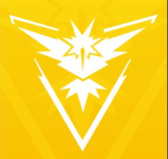

Times
Além de sair numa jornada capturando Pokémon, os jogadores devem escolher um time para fazer parte. Os times são Instinct, Mystic e Valor, mas o usuário só pode decidir de qual fará parte ao chegar no nível cinco. Basta interagir com um ginásio e o professor Willow lhe apresentará a Spark, Blanche e Candela, os líderes das equipes.
Professor Willow
Professor Willow é um Professor Pokémon que aparece no jogo para celular Pokémon GO. Ele é especialista em habitats e distribuição de Pokémon. Ao contrário de outros professores que dão diretamente aos Treinadores seu primeiro Pokémon, o Professor Willow dá aos Treinadores suas primeiras Pokébolas para capturar seu primeiro Pokémon.
O Professor Willow tem três assistentes, cada um deles chefe de uma equipe que pesquisa Pokémon de diferentes maneiras. Eles realizam essa pesquisa dentro de Ginásios de suas respectivas equipes, com o mascote de cada equipe sendo um dos pássaros lendários. O líder das equipes também avaliará os Pokémon dos treinadores em suas equipes quando solicitado.
InstinctOs Treinadores do Team Instinct acreditam que a intuição de um Pokémon está ligada à forma como eles são chocados. O Team Instinct é representado por Zapdos. Spark, o líder do Team Instinct, que está pesquisando sobre a criação de Pokémon. |
 |
MysticOs Team Mystic Trainers acreditam que mantendo a calma e analisando cada situação, eles não podem perder. A equipe Mystic é representada por Articuno. Blanche, a líder do Team Mystic, que está pesquisando a Evolução Pokémon. |
ValorOs Treinadores do Team Valor acreditam que seus Pokémon são os mais fortes porque treinam para aumentar naturalmente o poder de um Pokémon em busca da verdadeira força. A Equipe Valor é representada por Moltres. Candela, líder da Equipe Valor. |

Equipe GO RocketA Equipe GO Rocket se trata de uma equipe que busca fazer o mal durante a jogatina de Pokémon GO, os Recrutas da Equipe GO Rocket estão invadindo as Poképaradas ao redor do mundo! Interajam com uma Poképarada invadida para participar de uma Batalha da Equipe GO Rocket e defender a Poképarada. Quando você vence Batalhas da Equipe GO Rocket, tem-se a oportunidade de pegar um Pokémon Sombroso e você pode purificar o pokémon com doces e poeiras estelares, estes com mais dano em batalhas quando purificados. Na Equipe GO Rocket existem os capagangas que devem ser derrotados, ao derrotar 6 capangas você junta peças suficientes para formar um radar e buscar os lideres da equipe(Arlo, Sierra e Cliff), para ganhar mais itens e pokémons melhores. |
/i.s3.glbimg.com/v1/AUTH_bc8228b6673f488aa253bbcb03c80ec5/internal_photos/bs/2019/0/Q/JlsCxXScGeECNgzQDsmA/eizhwmgwoaal1ip.jpg) |
Cooperação e Competição
O grande propósito de Pokémon GO com os times é tornar o jogo cooperativo, de forma que colabore com seus colegas e amigos de equipe competindo contra as outras equipes do jogo.
GinásiosO primeiro local de cooperação ou competição são os Ginásios. Competir ou cooperar pela dominação de um Ginásio faz parte da mecânica do jogo. Se há um Ginásio de sua equipe disponível, você pode inserir um Pokémon nele para defender seu time, alimentando-o periodicamente com frutas. Cada ginásio contém 6 vagas disponíveis. A permanência do seu Pokémon por 8 horas em um Ginásio por dia lhe garantirá 50 Pokémoedas diárias. O jogador que gira uma Poképarada do Ginásio controlado por sua equipe recebe itens extras. Se o Ginásio está sob o controle de outra equipe, pode-se lutar contra seus defensores para assumir o controle do Ginásio. |

|
Batalhas de ReidesNas batalhas de reide, os jogadores que tem domínio do Ginásio recebem Bolas Prêmio extras no pacote de prêmios. Antes do acréscimo das Megarreides, a equipe que causasse maior dano também recebia uma maior quantidade de bolas para captura. Desafios Globais Ocasionalmente, ocorrem eventos no jogo em que jogadores do mundo todo trabalham coletivamente para realizar tarefas específicas para sua equipe ou cumprir metas de evento . |

|